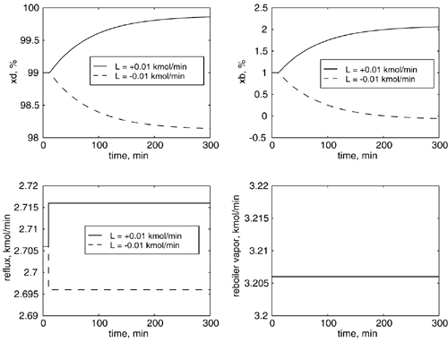
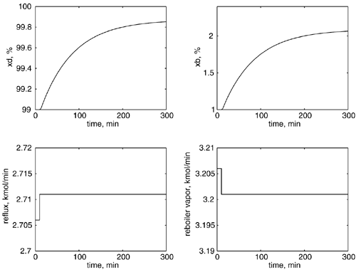
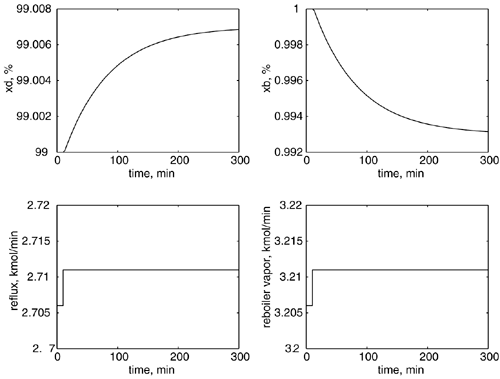

| [ Team LiB ] |
|
M13.2 Open-Loop BehaviorResponse to Reflux ChangeHere, we consider open-loop step changes in the manipulated inputs, with additional time delays of 2 minutes in the concentration measurements. The responses to step changes of ±0.01 kmol/minute in reflux at t = 10 minutes, while keeping vapor boil-up constant, are shown in Figure M13-3. The response to a positive reflux flow change are shown as solid lines, while responses to a negative reflux change are shown as dashed lines; also, we have chosen to plot mole percent rather than mole fraction (the unit used in the transfer function matrix). The responses are symmetric because we are using a linear model. Naturally, the bottoms composition cannot decrease below 0, as obtained with a step decrease in reflux flow; this illustrates a clear limitation to the use of a linear model. Figure M13-3. Open-loop step response. Change of ±0.01 kmol/minute in reflux flow rate. Response to Vapor Boil-Up ChangeThe reader should generate responses to step changes of ±0.01 kmol/minute in the vapor boil-up rate (V) at t = 10 minutes (see Additional Exercise 1). Compare and contrast these responses with those of the reflux changes. Are these changes consistent with the transfer function matrix? Response to Simultaneous Changes in Reflux and Vapor Boil-UpIt should be noted that the effect of the input "direction" is very important. Contrast the response to reflux (+0.005 kmol/minute) and vapor (-0.005 kmol/minute) changes that are in the "opposite" directions, with simultaneous positive (+0.005 kmol/minute) changes in reflux and vapor. The responses shown in Figure M13-4 are two orders of magnitude larger than in Figure M13-5, although the magnitude of the input changes are the same. The SVD analysis shown in Section M13.6 is used to explain these results. Remember that this is a linear model, based on the nominal steady-state conditions. These are not nonlinear effects; rather, they illustrate the important of "direction" in multivariable processes, even when the processes are linear. Figure M13-4. Open-loop response to a simultaneous +0.005 kmol/minute changes in reflux and –0.005 kmol/minute in vapor. Figure M13-5. Open-loop response to simultaneous +0.005 kmol/minute changes in reflux and vapor. |
| [ Team LiB ] |
|